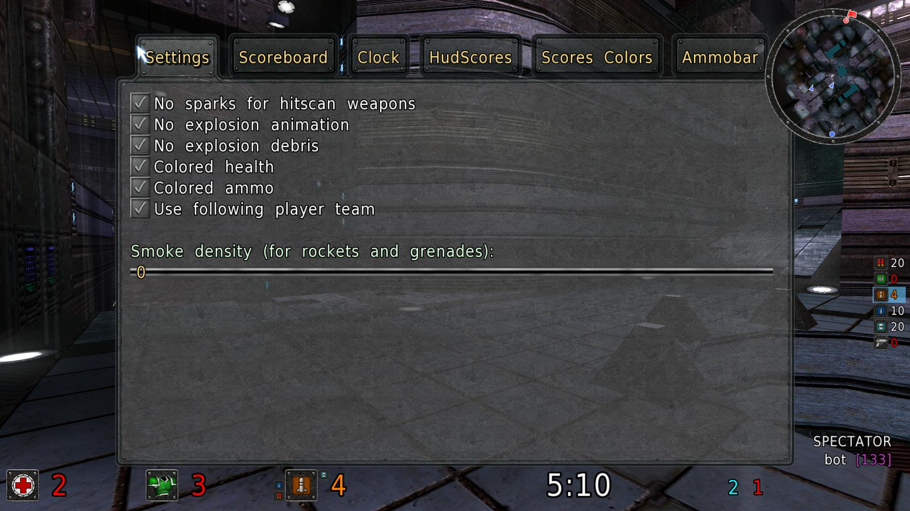
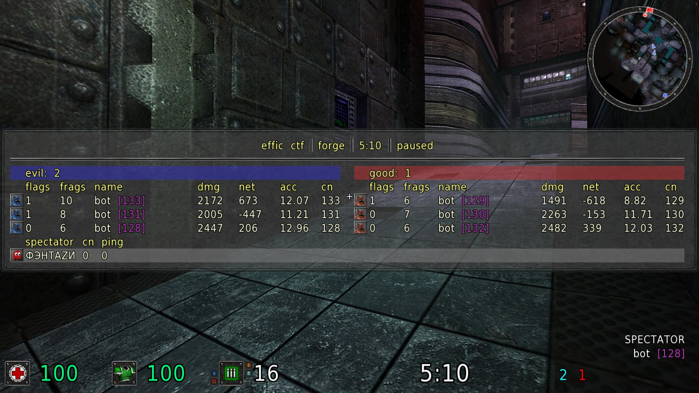
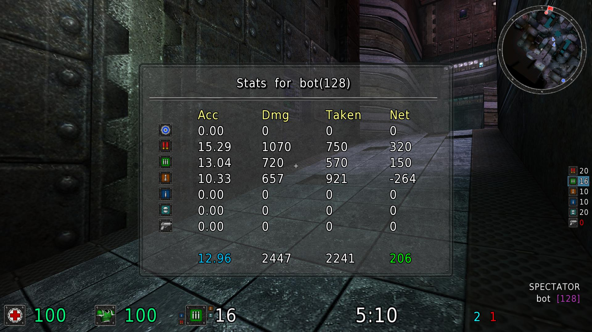

Sauerbraten SDL2 Client
Download
Features
- All SDOS features, except multipoll.
SDL2 uses raw mouse input whenever is possible, so mouse movement has no any lags/acceleration.
- Native build system/libraries are used (no static linkage).
- VS instead of mingw for window to get better performance.
- Sauerbraten default sleep/timer to get even more performance and compatibility with old systems.
- Improved alt+tabbing.
- Options to show more statistics on scoreboard.
- New command "ignoreserver" to permanently ignore any server on the master list.
- Easy additional visual settings configuration via "extendedsettings" command.
- Accuracy/damage statistics menu command "showplayerstats" (due to current network protocol limitations, statistics is gathered only after connection to a server.
Screenshots


